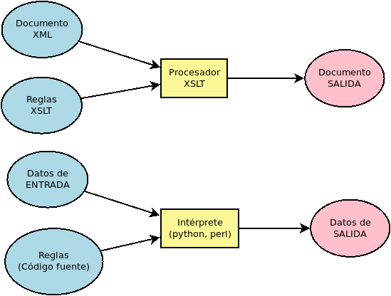
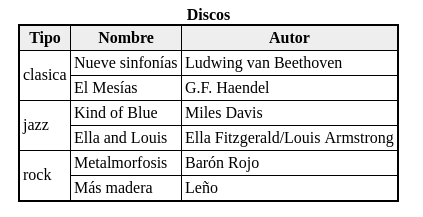

XSLT¶
Introducción¶
¿Qué es XSLT?¶
XSLT (en castellano, algo así como lenguaje para transformaciones basadas en hojas de estilos extensibles) es un lenguaje de programación basado en XML que permite traducir entre distintos dialectos XML o entre un dialecto XML y texto plano. Por lo general, la transformación se lleva a cabo hacia un formato que tenga definida una visualización (p.e. HTML). También puede generarse un documento PDF, pero en este caso la conversión que obra XSLT se lleva a cabo hacia XSL-FO y es desde este dialecto donde se hace una última transformación hacia PDF.
XSLT es un dialecto XML, pero también un lenguaje de programación, puesto que se escribe para definir las reglas de transformación que deben aplicarse para realizar la conversión entre dos dialectos XML distintos. Así pues, una vez escrito, se toma este mismo documento XSLT, el documento XML a transformar y un procesador XSLT, que se encarga de hacer la transformación del XML según las reglas del XSLT para obtener la salida:
Establecido que XSLT es un lenguaje de programación, queda reseñar cuáles son sus características:
Tiene una sintaxis XML, de manera que sus instrucciones (estructuras de flujo, funciones, etc.) son elementos XML.
Sigue, más o menos, el paradigma de la programación declarativa funcional, de modo que no hay variables y los bucles están muy restringidos. Sin embargo, carece de la propiedad fundamental de que las funciones sean ciudadanos de primera clase.
Es un lenguaje basado en la coincidencia de patrones de texto, como awk por ejemplo. Dicho más extensamente, a diferencia de un lenguaje de programación imperativa, el flujo natural del programa no es un listado de instrucciones que se ejecuta de modo secuencial, sino que el programa se compone de bloques de código (elementos) que declaran cómo se debe transformar cada elemento del XML original. El procesador se encarga de comprobar qué bloque es aplicable a cada nodo XML del documento original.
Versiones
De XSLT existen tres versiones:
La 1.0 publicada en 1999, que usa XPath 1.0 y es la más extendida y aún hoy se sigue utilizando. Para esta versión se definieron extensiones EXSLT que complementan el estándar y permiten hacer más transformaciones. En estos apuntes se tratará esta versión por cuanto es la que única que, dentro del software libre, soporta la librería libxslt en C. que es la base que utilicen muchísimos programas y lenguajes de programación, entre ellos xmlstarlet.
La 2.0 que usa XPath 2.0 y fue publicada en 2007.
La 3.0, que usa XPath 3.0 o 3.1 y fue publicada en junio de 2017. Saxon, procesor desarrollado en Java, implementa esta versión. El problema es que al no estar desarrollado en C no se presta a ser tomado como base por programas (no escritos en Java) y lenguajes de programación.
Prudencia
El apéndice desarrolla la versión 1.0 del estándar XSLT, a pesar de que el resto de los apuntes introducen con cierta profundidad XPath 3.1. El autor no ha estudiado la versión 3.0, aunque por lo que puede leer en esta comparación entre XSLT 1.0 y XSLT 2.0, no hay diferencias significativas de concepto, sino que:
Los principales cambios en el comportamiento se deben a la interpretación de las expresiones XPath, que ya hemos discutido en el epígrafe dedicado a XPath. Por tanto, sabiendo cómo interpreta XPath, adivinaremos cómo se comporta XSLT.
Las nuevas funciones añadidas a XPath cubren las necesidades por la que nacieron las extensiones EXSLT para la versión 1.0. Así pues, no son necesarias por más tiempo.
Presenta algunos añadidos propios de XSLT.
En definitiva, dar el salto de la versión 1.0 a la versión 3.0 no entraña dificultad alguna si ya se conoce XPath 3.1.
Ejemplo introductorio¶
Antes de entrar en harina es más didáctico plantear un ejemplo y ver cuál es el aspecto del código XSLT. Supongamos el siguiente documento XML:
<?xml version="1.0" encoding="UTF-8" standalone="yes"?>
<!DOCTYPE discoteca [
<!ELEMENT discoteca (disco+)>
<!ELEMENT disco (nombre, autor)>
<!ATTLIST disco id ID #REQUIRED
tipo (clasica|rock|pop|jazz|folk) #REQUIRED>
<!ELEMENT nombre (#PCDATA)>
<!ELEMENT autor (#PCDATA)>
]>
<?xml-stylesheet type="text/xsl" href="discos.txt.xsl"?>
<!--
- Almacena información sobre discos personales.
- "discos.txt.xsl" genera una lista en texto plano.
-->
<discoteca>
<disco id="d1" tipo="clasica">
<nombre>Nueve sinfonías</nombre>
<autor>Ludwing van Beethoven</autor>
</disco>
<disco id="d2" tipo="jazz">
<nombre>Kind of Blue</nombre>
<autor>Miles Davis</autor>
</disco>
<disco id="d3" tipo="rock">
<nombre>Metalmorfosis</nombre>
<autor>Barón Rojo</autor>
</disco>
<disco id="d4" tipo="rock">
<nombre>Más madera</nombre>
<autor>Leño</autor>
</disco>
<disco id="d5" tipo="jazz">
<nombre>Ella and Louis</nombre>
<autor>Ella Fitzgerald/Louis Armstrong</autor>
</disco>
<disco id="d6" tipo="clasica">
<nombre>El Mesías</nombre>
<autor>G.F. Haendel</autor>
</disco>
</discoteca>
El documento tiene incrustado el DTD que lo valida:
$ xmlstarlet val -E discos.xml
discos.xml - valid
Queremos crear una transformación, de suerte que obtengamos una listado de discos en texto plano con el siguiente aspecto:
$ xslstarlet tr discos.txt.xsl discos.xml
LISTA DE DISCOS
+ clasica
- Nueve sinfonías (Ludwing van Beethoven)
- El Mesías (G.F. Haendel)
+ jazz
- Kind of Blue (Miles Davis)
- Ella and Louis (Ella Fitzgerald/Louis Armstrong)
+ rock
- Metalmorfosis (Barón Rojo)
- Más madera (Leño)
Pues bien, una posible solución para lograr tal transformación es la siguiente:
1<?xml version="1.0" encoding="UTF-8"?>
2<xsl:stylesheet version="1.0"
3 xmlns:xsl="http://www.w3.org/1999/XSL/Transform">
4
5 <xsl:output method="text" encoding="UTF-8"/>
6
7 <xsl:template match="discoteca">
8 <xsl:text>LISTA DE DISCOS </xsl:text>
9 <xsl:apply-templates select="disco">
10 <xsl:sort select="@tipo" />
11 </xsl:apply-templates>
12 </xsl:template>
13
14 <xsl:template match="disco">
15
16 <xsl:if test="not(preceding-sibling::disco[@tipo = current()/@tipo])">
17 <!-- Alternativo "/discoteca/disco[@tipo=current()/@tipo][1] = ." -->
18 <xsl:call-template name="tipo" />
19 </xsl:if>
20
21 <xsl:call-template name="disco" />
22 </xsl:template>
23
24 <xsl:template name="tipo">
25 <xsl:text> </xsl:text>
26 <xsl:text>+ </xsl:text>
27 <xsl:value-of select="@tipo" />
28 <xsl:text> </xsl:text>
29 </xsl:template>
30
31 <xsl:template name="disco">
32 <xsl:text> - </xsl:text>
33 <xsl:value-of select="nombre" />
34 <xsl:text> (</xsl:text>
35 <xsl:value-of select="autor" />
36 <xsl:text>) </xsl:text>
37 </xsl:template>
38
39</xsl:stylesheet>
Es aún prematura entender con perfección el código, pero es muy pertinente analizarlo superficialmente para entender cómo funciona el procesador, esto es, cómo lee las reglas para generar la transformación:
Se define una plantilla para el nodo
<discoteca>, o sea, el nodo raíz [1].Hay definida otra plantilla para los nodos «disco»
El procesador empieza su labor viendo si existe una plantilla para «/». Existe y, por ella, se desencadena la transformación. Tal plantilla genera el título «LISTA DE DISCOS» y aplica la plantilla a los sucesivos nodos disco, pero ordenados por el atributo «@tipo».
La plantilla para «disco» se encarga de generar los ítem:
- Título (Artista)
pero cuando el disco es el primero de su tipo (o, leyendo literalmente, cuando no hay otro nodo hermano anterior que sea del mismo tipo que el tipo del nodo que estamos tratanto), además, se genera la etiqueta:
+ tipo_de_musica
Nota
Aunque sea muy prematuro entenderlo, esta solución tiene un grave defecto: vuelve muy complicado hacer numerada la lista de tipos de música, en vez de despacharla con un «+». Más adelante se ensaya otra solución que sí lo permite sin ser más complicada.
Supongamos, en cambio, que nuestra intención es generar una tabla HTML (en realidad XHTML que es su equivalente XML) como la siguiente:
La estrategia para la resolución es la: la plantilla del nodo «/» creará el
envoltorio, esto es, los elementos <html>, <head>, <body> y
<table>; y la plantilla de cada elemento disco deberá crear cada fila
<tr>. Además, al igual que en el caso anterior, cuando el disco sea el
primero de tu tipo deberá generar la celda que indica el tipo de música con una
altura igual al número de discos que haya de ese tipo:
1<?xml version="1.0" encoding="UTF-8"?>
2<xsl:stylesheet version="1.0"
3 xmlns:xsl="http://www.w3.org/1999/XSL/Transform">
4
5 <xsl:output method="xml" version="1.0" encoding="UTF-8"
6 doctype-public="-//W3C//DTD XHTML 1.0 Strict//EN"
7 doctype-system="http://www.w3.org/TR/xhtml1/DTD/xhtml1-strict.dtd"
8 indent="yes" />
9
10 <xsl:template match="discoteca">
11 <html>
12 <head>
13 <title>Discos de mi fonoteca</title>
14 </head>
15 <body>
16 <table>
17 <caption>Discos</caption>
18 <tr><th>Tipo</th><th>Nombre</th><th>Autor</th></tr>
19 <xsl:apply-templates select="disco">
20 <xsl:sort select="@tipo" />
21 </xsl:apply-templates>
22 </table>
23 </body>
24 </html>
25 </xsl:template>
26
27 <xsl:template match="disco">
28 <tr>
29 <xsl:if test="not(preceding-sibling::disco[@tipo = current()/@tipo])" >
30 <xsl:element name="td">
31 <xsl:attribute name="rowspan">
32 <xsl:value-of select="count(/discoteca/disco[@tipo=current()/@tipo])" />
33 </xsl:attribute>
34 <xsl:value-of select="@tipo" />
35 </xsl:element>
36 </xsl:if>
37 <td><xsl:value-of select="nombre" /></td>
38 <td><xsl:value-of select="autor" /></td>
39 </tr>
40 </xsl:template>
41
42</xsl:stylesheet>
Nota pedagógica
Se pueden introducir el ejemplo que genera la lista de texto, creando sucesivamente los XSLT que generan los siguientes resultados:
$ xmlstarlet tr discos.txtv1.xsl discos.xml
LISTA DE DISCOS
- clasica: Nueve sinfonías (Ludwing van Beethoven)
- jazz: Kind of Blue (Miles Davis)
- rock: Metalmorfosis (Barón Rojo)
- rock: Más madera (Leño)
- jazz: Ella and Louis (Ella Fitzgerald/Louis Armstrong)
- clasica: El Mesías (G.F. Haendel)
$ xmlstarlet tr discos.txtv1.xsl discos.xml
LISTA DE DISCOS
- clasica: Nueve sinfonías (Ludwing van Beethoven)
- clasica: El Mesías (G.F. Haendel)
- jazz: Kind of Blue (Miles Davis)
- jazz: Ella and Louis (Ella Fitzgerald/Louis Armstrong)
- rock: Metalmorfosis (Barón Rojo)
- rock: Más madera (Leño)
Pueden descargarse desde aquí estas
transformaciones intermedias.
Ver también
Para saber cómo realizar transformación XSLT usando xmlstartlet consulte el apéndice dedicado a ello.
Expresiones¶
Muchos de los elementos de XSLT permiten incluir atributos cuyo valor puede ser un literal o una expresión XPath, dentro de la cual, además de sus propias funciones, podrán usarse funciones de XSLT y funciones de EXSLT. Usar estas expresiones dentro un atributo XML provoca que haya algunas particularidades a la hora de escribirlas.
Fijemos nuestra vista en el elemento <xsl:value-of>, en cuyo atributo select
se incluyen estas expresiones. La expresión de una cadena literal debe ir
incluida entre comillas:
<xsl:value-of select="'una frase cualquiera'">
Ya es sabido que se debe rodear el valor de un atributo con comillas y que es indiferente que estas sean simples o dobles. Pues bien, las comillas que determinan que el valor es una cadena (simples en este caso) deben ser las que no se usan para rodear el valor (dobles en este caso). Para obtener el valor de un elemento o un atributo, basta con usar la expresión XPath apropiada:
<xsl:value-of select="@tipo">
Esto devuelve el valor del atributo tipo del elemento que se esté procesando.
Cuando se realizan comparaciones, es importante reseñar que no se pueden usar los caracteres «<» y «>» directamente, sino que habrá que usar las entidades «<» y «>»:
<xsl:if test="position() > 2">
Recuérdese, además, que XPath dispone de sus propias funciones, que pueden usarse en todas estas expresiones. pero que libxml2 (y, por tanto, xmlstarlet) sólo soporta XPath 1.0.
Además, puede usarse la notación de llaves con las expresiones XPath cuando se desea evaluarlas dentro de los atributos de los elementos del XML de salida.
Nota
Es preciso aquí, hacer un inciso. aunque gracias a XPath sabemos
qie una cadena se define incluyendo el valor entre comillas, y un número con un número
a secas, definir un valor bopleano no es algo que se haya practicado hasta
ahora, pero es posible que sea necesario a partir de ahora. Se definen
mediante las funciones true() y false():
<xsl:variable name="soycadena" select="'abcdef'" />
<xsl:variable name="soynumero" select="12.24" />
<xsl:variable name="soybooleano" select="true()" />
Elementos¶
XSLT es un lenguaje de programación con sintaxis XML y, por tanto, estudiar la sintaxis de XSLT es repasar qué elementos admite y que atributos soporta cada elemento.
Cabecera¶
Un documentos XSLT es un documento XML. Por tanto, la primera línea debe ser la de todo documento XML:
<?xml version="1.0" encoding="utf-8"?>
O cualquier otra variante válida. Escrita esta, podemos abrir nuestro elemento
contenedor que, para el caso es <xsl:stylesheet>:
<!ELEMENT xsl:stylesheet (xsl:import*, top-level-elements)>
<!ATTLIST xsl:stylesheet id ID #IMPLIED
version NMTOKEN #REQUIRED
extension-element-prefixes NMTOKENS #IMPLIED
exclude-result-prefixes NMTOKENS #IMPLIED>
El elemento puede tener un identificador, pero es opcional y no muy común. Lo que sí es obligatorio es incluir la versión del XSLT que se está usando: 1.0, 2.0 o 3.0. En nuestro caso, siempre será 1.0*. Además, como todo elemento XML, puede tener la definición de su propio espacio de nombres (que suele ser xsl). Así pues, una apertura típica es:
<xsl:stylesheet version="1.0" xmlns:xsl="http://www.w3.org/1999/XSL/Transform">
<!-- Contenido de la hoja -->
</xsl:stylesheet>
Cuando se usan extensiones EXSLT, es necesario incluir el atributo
extension-element-prefixes (y el espacio de nombres correspondiente). Por
ejemplo, si se usan las extensiones para fecha y matemáticas:
<xsl:stylesheet version="1.0" xmlns:xsl="http://www.w3.org/1999/XSL/Transform"
xmlns:date="http://exslt.org/dates-and-times"
xmlns:math="http://exslt.org/math"
extension-element-prefixes="date math">
<!-- Contenido de la hoja -->
</xsl:stylesheet>
Abierto el elemento <xsl:stylesheet> lo primero que hay que hacer es
importar otros XSLT, si es que se van a reaprovechar las definiciones que se
hicieron en otros ficheros, con <xsl:import>. También existe
<xsl:include> que puede usarse en cualquier posición dentro de
xsl:stylesheet:
<!ELEMENT xsl:import EMPTY>
<!ATTLIST xsl:import href CDATA #REQUIRED>
<!ELEMENT xsl:include EMPTY>
<!ATTLIST xsl:include href CDATA #REQUIRED>
En ambos casos, el atributo href permite indicar la dirección del documento
xsl importado. Como se ve se definen del mismo modo, pero no son elementos
equivalentes. <xsl:include> puede usarse cuando la definiciones hechas es un
documento externo queremos tenerlas disponibles exactamente del mismo modo que
las tendríamos disponibles, si las hubiéramos hecho dentro del propio documento.
Es útil cuando queremos despiezar nuestra transformación en varios ficheros,
quizás porque sea muy compleja.
<xsl:import> actúa de distinta forma y tiene otra utilidad: la de modificar
estilos ya definidos sin tener que reescribir todo. En este caso, las
definiciones de la hoja que se importa tienen menos prioridad que las de la hoja
importadora. Así pues, si quisiéramos crear otra hoja xsl que sacara una salida
idéntica a la del primer ejemplo, salvo por el hecho de
que queremos que los signos “+” sean asteriscos (“*”), podríamos hacer lo
siguiente:
<?xml version="1.0" encoding="utf-8"?>
<xsl:stylesheet version="1.0"
xmlns:xsl="http://www.w3.org/1999/XSL/Transform">
<xsl:import href="discos.txt.xsl" />
<xsl:template name="tipo">
<xsl:text> </xsl:text>
<xsl:text>* </xsl:text>
<xsl:value-of select="@tipo" />
<xsl:text> </xsl:text>
</xsl:template>
</xsl:stylesheet>
O sea, importamos las definiciones de discos.txt.xsl y redifinimos la
plantilla con nombre tipo. Otro elemento importante al comenzar a
escribir un documento XSLT es <xsl:output>, el cual permite definir cómo
será la salida de procesamiento, es decir, cómo será el resultado de nuestra
transformación:
<!ELEMENT xsl:output EMPTY>
<!ATTLIST xsl:output method (xml|html|text) "xml"
version CDATA #IMPLIED
encoding NMTOKEN #IMPLIED
omit-xml-declaration (yes|no) "no"
standalone (yes|no) "no"
doctype-public CDATA #IMPLIED
doctype-system CDATA #IMPLIED
indent (yes|no) "no"
media-type CDATA #IMPLIED>
El primero de los atributos debe especificar cuál será el método de salida:
«xml» para generar otro XML, «text» para generar un fichero de texto y
HTML para generar un HTML (en su variante SGML). En la versión 1.0, si
se quiere generar un fichero XHTML hay que especificar el método «xml». El
atributo version permite indicar la versión del XML o HTML de salida.
También es interesante indent que permite sacar un documento XML o HTML
con un sangrado que lo haga legible. Los ejemplos expositorios muestran el uso de este elemento.
<xsl:stylesheet> tiene otros hijos posibles, pero se introducirán adelante.
Plantillas¶
Definición¶
La definicion de las transformaciones consiste basicamente en describir cómo se transformara cada uno de los nodos del XML original, esto es, en crear plantillas para la transformacion de cada nodo.
Estas plantillas se crean dentro de <xsl:stylesheet> mediante el elemento
<xsl:template>, cuya definición en forma DTD podría ser más o menos así:
<!ELEMENT xsl:template (xsl:param*, template)
<!ATTLIST xsl:template match CDATA #IMPLIED
name NMTOKEN #IMPLIED
priority NMTOKEN #IMPLIED
mode NMTOKEN #IMPLIED>
Empecemos aclarando sus parametros:
- match
permite indicar una expresion XPath que determina sobre qué elemento o elementos es aplicable la plantilla. Así, por ejemplo,
match="disco"indica que la plantilla es aplicable a los elementos «disco», se encuentren donde se encuentren, puesto que no se especifica ruta y en este punto no tiene sentido expresar una ruta relativsa ya que no tenemos ninguna referencia. En cambio, si la expresión hubiera sidomatch="disco[1]", la plantilla sólo se aplicaria al primer elemento «disco» y no al resto. El parámetro es obligatorio a menos que se incluya un parámetro name.- name
permite darle un nombre a la plantilla y puede aparecer con o sin el parámetro
match. Las plantillas con nombre pueden invocadarse apelando al nombre y no describen directamente la transformación de nodos del XML original como hacen aquellas conmatch: simplemente, cuando se invocan, se ejecutan tomando como nodo de procesamiento el nodo de procesamiento de la plantilla desde la que se invocan. Véase el primer ejemplo introductorio en que hay definida una llamada «tipo».- mode
es un parámetro opcional y permite crear distintas plantillas para un mismo elemento. Cuál de las plantillas se use, dependerá entonces del atribute mode con el que se invoque (vease <xsl:apply-templates>).
- priority
modifica la prioridad predeterminada de la plantilla, que se calcula atendiendo al valor de match. Esta prioridad predeterminada es:
Prioridad
Descripción
Ejemplo
-0.50
Comodín o nombre genérico
*@*node()text()-0.25
Comodin con espacio de nombres
ns:*@ns:*0.00
Nombre particular de un nodo
disco@tipo0.50
Cualquier otra expresión más precisa
/discoteca/discodisco[@tipo=”clasica”]Esto significa que si tuvieramos dos plantillas, una con
match="disco"y otra conmatch="disco[last()]", el último elemento «disco» cumple con ambas expresiones, pero como la segunda expresión tiene más prioridad que la primera, entonces la plantilla que se usará para este último disco es la segunda. Por supuesto, el atributo priority permite indicar una prioridad numérica que altere la prioridad calculada.
El contenido de un elemento <xsl:template> es muy diverso y depende mucho de qué queramos hacer dentro de él: obsérvese que dentro de él tienen cabida tanto la mayoría de los elementos de XSLT como elementos del XML resultante: basta mirar los dos ejemplos de arriba para comprobar lo que se afirma ahora. Así pues, ya sabremos ir rellenando este elemento según vayamos viendo cada elemento.
Es fundamental tener claro el concepto de nodo de procesamiento. El
nodo de procesamiento es aquel nodo del XML original al que la
plantilla está aplicando la transformación. Cuando se usan expresiones XPath
relativas dentro de una plantilla, se sobreentiende que son relativas a su nodo
de procesamiento. Si echa un vistazo al primer ejemplo
verá que en la plantilla para «/» se invoca para todos los hijos
<disco> de <discoteca> la aplicación de su plantilla[2]:
<xsl:apply-templates select="discoteca/disco" />
Esto supone que se aplique consecutivamente 6 veces la plantilla para
<disco>, ya que seis son los elementos <disco> del XML original[3].
Durante la primera ejecución de la plantilla el nodo de procesamiento será el
primer elemento <disco>; durante la segunda, el segundo; y así
sucesivamente. Por este motivo, las expresiones @tipo, nombre o
autor funcionan, ya que se refieren al nodo de procesamiento, que es un
elemento <disco>.
Ahora bien, aparte de todos estos innumerables elementos hay uno en particular con el que se puede abrir la definición de una plantilla: xsl:param. El nombre de este elemento no es caprichoso: param es apócope de parámeter, parámetro, y declara los parámetros que se pueden pasar a la plantilla cuando se la invoca, del mismo modo que en un lenguaje de programación más convencional se pueden pasar argumentos a las funciones. Es más, en este lenguaje los plantillas hacen el papel de funciones.
La definición del elemento es esta:
<!ELEMENT xsl:param (template)>
<!ATTLIST xsl:param name NMTOKEN #REQUIRED
select CDATA #IMPLIED>
El atributo name es obligatorio y declara cómo se llama el parámetro. El
atributo select, sin embargo, es opcional e indica cuál será el valor
predeterminado del parámetro cuando en la invocación a la plantilla no se
indique valor alguno. Estos son ejemplos de declaraciones correctas de
parámetros:
<xsl:template match="disco">
<xsl:param name="uno" /> <!-- Parámetro sin valor predeterminado -->
<xsl:param name="dos" select="'soy 2'"/> <!-- Parámetro con valor predeterminado -->
<!-- Operaciones que se hacen en esta plantilla -->
</xsl:template>
Sin embargo, el elemento <xsl:param> puede no estar vacío. En este caso, su contenido sirve para generar un valor que será el que se tome como predeterminado. Por ejemplo:
<xsl:template match="disco">
<xsl:param name="uno" /> <!-- Sin valor predeterminado -->
<xsl:param name="dos"> <!-- El Valor predeterminado lo genera el contenido -->
<xsl:value-of select="'soy '">
<xsl:text>2</text>
</xsl:param>
<!-- Operaciones que se hacen en esta plantilla -->
</xsl:template>
Nota
Por lo general, esta segunda forma se usa cuando el valor no es un valor fijo, sino que se genera de una forma más o menos complicada que requiere hacer varias operaciones.
Ver también
El documento XSLT en sí también puede recibir parámetros externos y estos se definen con <xsl:param>. Consulte la sección dedicada a las variables para más información.
Para usar el valor de estos parámetros dentro del cuerpo de la plantilla, debe utlizarse la misma sintaxis que para las constantes definidas mediante <xsl:variable>.
Invocación¶
Hay dos modos de invocar una plantilla:
Basándose en el nodo con
<xsl:apply-templates>, para aquellas plantillas que tengan un atributomatch:<!ELEMENT xsl:apply-templates (xsl:sort|xsl:with-param)*> <!ATTLIST xsl:apply-templates select CDATA #IMPLIED mode NMTOKEN #IMPLIED>
Basándose en su nombre con
<xsl:call-template>, para aquellas plantillas que tengan un atributoname:<!ELEMENT xsl:call-template xsl:with-param*> <!ATTLIST xsl:call-template name NMTOKEN #REQUIRED>
Ambos modos de invocación están ilustrados en los ejemplos introductorios. Por ejemplo, en la plantilla para el elemento «/» del primer
ejemplo, se invoca la plantilla disco para que se aplique a los elementos de
/discoteca/disco:
<xsl:apply-templates select="disco" />
La invocación también podría haber sido:
<xsl:apply-templates select="//disco" />
o incluso:
<xsl:apply-templates select="*" />
puesto que las tres expresiones XPath que dan valor al atributo select
seleccionan todos los discos de la «discoteca». En consecuencia, la salida
mostrará las transformaciones de cada elemento <disco> y en el orden en
que la expresión XPath los devuelve, esto es, el orden en que aparecen en el
XML original. En cambio, si se hubiera escrito:
<xsl:apply-templates select="disco" />
no se habría aplicado ninguna plantilla a los discos, ya que no hay ningún
<disco> hijo del nodo «/», que es el que se está procesando en el momento de
usar este <xsl:apply-templates>.
Si no se expresa el atributo select se aplican las plantillas de todos los
nodos hijos del nodo de procesamiento.
Además del atributo select, puede incluirse opcionalmente un atributo
mode en caso de que al definir la plantilla se usase tal atributo también.
Como contenido pueden incluirse dos elementos: <xsl:sort>, que permite aplicar la plantilla a los nodos según un determinado orden (de lo contrario el orden vendrá determinado por la aparición del nodo en el documento); y <xsl:with-param> que permite pasar parámetros a la plantilla[4].
La definición pseudo-formal de <xsl:with-param> es exactamente la misma que
para <xsl:param>:
<!ELEMENT xsl:with-param (template)>
<!ATTLIST xsl:with-param name NMTOKEN #REQUIRED
select CDATA #IMPLIED>
y podemos explicar exactamente lo mismo, de modo que no se repetirá.
Por su parte, la definición de <xsl:sort> es la siguiente:
<!ELEMENT xsl:sort EMPTY>
<!ATTLIST xsl:sort select CDATA #REQUIRED
lang NMTOKEN #IMPLIED
data-type (text|number|qname) "text"
order (ascending|descending) "ascending"
case-order (upper-first|lower-first) "upper-first">
El atributo fundamental de <xsl:sort> es select que indica que expresión
XPath se utilizará para definir la ordenación. El resto de los atributos
permite modificar esta ordenación: lang especifica la lengua que se usará
para ordenar; data-type si se ordenará suponiendo texto o suponiendo
números; order si se quiere que la ordenación sea de menor a mayor o de
mayor a menor; y case-order, si se quiere que la mayúscula o la minúscula
vaya primero.
Nota
En los ejemplos se usa este elemento para ordenar los discos por su tipo.
Para ordenar pueden usarse varios <xsl:sort>; en ese caso, se ordenará según el criterio del primer <xsl:sort>, y a igualdad de éste, según el segundo y así sucesivamente. Por ejemplo, en el ejemplo introductorio sobre el claustro de profesores, podríamos ordenar alfabéticamente del siguiente modo:
<xsl:apply-templates select="profesor">
<xsl:sort select="apellidos"/>
<xsl:sort select="nombre"/>
</xsl:apply-templates>
Un aspecto a tener en cuenta cuando se usa <xsl:sort>, es cómo se evalúa la función position() de XPath. Esta función devuelve la posición del nodo respecto al conjunto de nodos que se están evaluando; y no respecto a la posición que ocupa dentro del documento. Esto significa que si definimos esta simple transformación:
<?xml version="1.0" encoding="UTF-8"?>
<xsl:stylesheet version="1.0"
xmlns:xsl="http://www.w3.org/1999/XSL/Transform">
<xsl:output method="text" encoding="UTF-8"/>
<xsl:template match="discoteca">
<xsl:text>LISTA DE DISCOS </xsl:text>
<xsl:apply-templates select="disco" />
</xsl:template>
<xsl:template match="disco">
<xsl:value-of select="position()" />
<xsl:text>. </xsl:text>
<xsl:value-of select="nombre" />
<xsl:text> </xsl:text>
</xsl:template>
</xsl:stylesheet>
la salida que se obtiene, puesto que no se especificó ningún orden en <xsl:apply-templates>, sigue el orden de aparición de los elementos disco en el documento:
LISTA DE DISCOS
1. Nueve sinfonías
2. Kind of Blue
3. Metalmorfosis
4. Más madera
5. Ella and Louis
6. El Mesías
lo cual es lo esperable. Si cambiamos la ordenación de los nodos para que, por ejemplo, se ordenen por nombre:
<xsl:apply-templates select="discoteca/disco">
<xsl:sort select="nombre" >
</xsl:apply-templates>
obtendremos esto otro:
LISTA DE DISCOS
1. El Mesías
2. Ella and Louis
3. Kind of Blues
4. Más madera
5. Metalmorfosis
6. Nueve sinfonías
Como puede observarse, la posición siempre es relativa a la ordenación que hayamos hecho, y no tiene nada que ver con la posición que ocupen dentro del documento. Si hubiéramos querido hacer referencia a la posición en él deberíamos haber usado el elemento <xsl:number>.
La otra forma de aplicar plantillas es invocarlas por su nombre con
<xsl:call-template>. En este caso, al invocarlas de este modo, no se le
indica al procesador que aplique la plantilla adecuada a los nodos que se
seleccionan con la expresión XPath incluida en match, sino que se le insta
a que aplique la plantilla cuyo nombre se refiere con name. El procesador,
pues, salta a otro lugar del código XSLT (la plantilla invocada), pero no
salta de nodo de procesamiento: éste sigue siendo el mismo que procesaba.
En consecuencia, crear una plantilla y aplicarla con <xsl:call-template> dentro de la invocante es equivalente a no hacerlo e incluir su código sin modificaciones dentro de la invocante en el punto en que se aplica con <xsl:call-template>. Las plantillas con nombre, sin embargo, nos permiten estructurar mejor el código.
El uso de <xsl:call-template> con una plantilla con nombre se puede comprobar en el primer ejemplo expositorio:
<xsl:template match="disco">
<xsl:if test="not(preceding-sibling::disco[@tipo = current()/@tipo])">
<xsl:call-template name="tipo" />
</xsl:if>
<xsl:text> - </xsl:text>
<xsl:value-of select="nombre" />
<xsl:text> </xsl:text>
<xsl:value-of select="concat('(', autor, ')')" />
<xsl:text> </xsl:text>
</xsl:template>
<xsl:template name="tipo">
<xsl:text> </xsl:text>
<xsl:text>+ </xsl:text>
<xsl:value-of select="@tipo" />
<xsl:text> </xsl:text>
</xsl:template>
Como puede verse la generación de la línea que indica el tipo de música se ha
extraído fuera de la plantilla y se ha metido en otra con nombre
(«tipo»). El nodo de procesamiento dentro de esta plantilla siempre es
un elemento <disco>, ya que es invocada desde una plantilla en que es así.
También podríamos, gracias a las plantilla con nombre, reorganizar el segundo ejemplo:
<?xml version="1.0" encoding="UTF-8"?>
<xsl:stylesheet version="1.0"
xmlns:xsl="http://www.w3.org/1999/XSL/Transform">
<xsl:output method="xml" version="1.0" encoding="UTF-8"
doctype-public="-//W3C//DTD XHTML 1.0 Strict//EN"
doctype-system="http://www.w3.org/TR/xhtml1/DTD/xhtml1-strict.dtd"
indent="yes" />
<xsl:template match="discoteca" name="html">
<html>
<xsl:call-template name="head" />
<xsl:call-template name="body" />
</html>
</xsl:template>
<xsl:template name="head">
<head>
<title>Discos de mi fonoteca</title>
</head>
</xsl:template>
<xsl:template name="body">
<body>
<xsl:call-template name="table" />
</body>
</xsl:template>
<xsl:template name="table">
<table>
<caption>Discos</caption>
<tr><th>Tipo</th><th>Nombre</th><th>Autor</th></tr>
<xsl:apply-templates select="disco">
<xsl:sort select="@tipo" />
</xsl:apply-templates>
</table>
</xsl:template>
<xsl:template match="disco">
<tr>
<xsl:if test="/discoteca/disco[@tipo=current()/@tipo][1] = ." >
<xsl:element name="td">
<xsl:attribute name="rowspan">
<xsl:value-of
select="count(/discoteca/disco[@tipo=current()/@tipo])" />
</xsl:attribute>
<xsl:value-of select="@tipo" />
</xsl:element>
</xsl:if>
<td><xsl:value-of select="nombre" /></td>
<td><xsl:value-of select="autor" /></td>
</tr>
</xsl:template>
</xsl:stylesheet>
¿Qué ocurre si se pide aplicar una plantilla que no se han definido?
La especificaciones de XSLT aclaran que existen definidas estas reglas implícitas:
<xsl:template match="*|/">
<xsl:apply-templates />
</xsl:template>
<xsl:template match="text()|@*">
<xsl:value-of select="." />
</xsl:template>
<xsl:template match="processing-instruction()|comment()" />
Por tanto, si se pide aplicar con <xsl:apply-templates> a una plantilla que no se ha definido, se mostrará todo el texto que contenga y se aplicará recursivamente la misma regla a los elementos que contenga.
Nota
Obsérvese cómo la plantilla predeterminada para el nodo / es
aplicar la plantilla de su único nodo hijo (en el ejemplo,
<discoteca>). Por ello, en la práctica podemos considerar que la
primera plantilla que busca el procesador es la plantilla cuyo match
coincide con el nombre del elemento contenedor (o sea, <discoteca>).
Ejercicio intermedio
Tomando el XML del ejemplo introductorio, crear un único XSLT que devuelva la siguiente salida:
LISTA DE DISCOS
1. clasica: Nueve sinfonías (Ludwing van Beethoven)
2. jazz: Kind of Blue (Miles Davis)
3. rock: Metalmorfosis (Barón Rojo)
4. rock: Más madera (Leño)
5. jazz: Ella and Louis (Ella Fitzgerald/Louis Armstrong)
6. clasica: El Mesías (G.F. Haendel)
LISTA ALTERNATIVA DE DISCOS
* [Ludwing van Beethoven] -- Nueve sinfonías (clasica)
* [Miles Davis] -- Kind of Blue (jazz)
* [Barón Rojo] -- Metalmorfosis (rock)
* [Leño] -- Más madera (rock)
* [Ella Fitzgerald/Louis Armstrong] -- Ella and Louis (jazz)
* [G.F. Haendel] -- El Mesías (clasica)
Nota
La primera lista está ordenada por tipo de música.
Variables¶
En XSLT no existen variables, sino exclusivamente constantes que pueden ser:
Definidas a través del elemento
<xsl-variables>que puede incluirse dentro de casi cualquier elemento (incluido <xsl:stylesheet>) y cuya sintaxis es equivalente a <xsl:param>:<!ELEMENT xsl:variable (template)> <!ATTLIST xsl:variable name NMTOKEN #REQUIRED select CDATA #IMPLIED>
Por ejemplo, la condición de los ejemplos introductorios:
<xsl:if test="not(preceding-sibling::disco[@tipo = current()/@tipo])" > <!-- Código si se cumple la condición --> </xsl:if>
podría haber escrito también así:
<xsl:variable name="tipo" select="@tipo" /> <xsl:if test="not(preceding-sibling::disco[@tipo = $tipo])" > <!-- Código si se cumple la condición --> </xsl:if>
Definidas como parámetro que se pasa a una plantilla a través de <xsl:param> y que se declaran dentro de la plantilla con <xsl:with-param>. El uso posterior del valor se hace exactamente igual que cuando se define la constante con <xsl:param>/<xsl:with-param>: anteponiendo un dólar.
Cómo se usa <xsl:param> (y su contraparte <xsl:with-param>) ya está explicado bajo un epígrafe anterior. Pero es necesario añadir que al usar el procesador XSLT se pueden pasar parámetros tal como se pasan al invocar una plantilla; y que, así como en <xsl:template> se declaran los parámetros, es posible declarar con <xsl:param> dentro de <xsl:stylesheet> los parámetros que pasan al procesamiento:
<?xml version="1.0" encoding="utf-8"?> <xsl:stylesheet version="1.0" xmlns:xsl="http://www.w3.org/1999/XSL/Transform"> <xsl:param name="param1" select="'xxxx'" /> <!-- Resto de la hoja --> </xsl:stylesheet>
lo cual permitiría pasar a la hoja un parámetro externo llamado param1. Con xmlstarlet, podríamos hacerlo así:
$ xmlstarlet tr hoja.xsl -p "param1='abcdef'" original.xml
que propiciaría que la constante $param1 tuviera como valor la cadena «abcdef». Tal como hemos hecho la definición, en caso de no pasar valor, su valor predeterminado sería la cadena «xxxx».
Generación de la salida¶
El objeto de escribir una transformación XSLT es generar un documento de salida: en principio, un fichero de texto o un fichero XML (o algo similar) como un HTML. Por tanto, el objetivo de las plantillas que creamos con <xsl:template> es transformar la información del XML original, bien en texto, bien en nuevos elementos XML.
El elemento más simple para esto es <xsl:text>:
<!ELEMENT xsl:text (#PCDATA)>
<!ATTLIST xsl:text disable-output-escaping (yes|no) "no">
cuyo uso puede conbsultarse en los ejemplos introductorios. Otro modo de volcar en la salida texto es el elemento
<xsl:value-of>:
<!ELEMENT xsl:value-of EMPTY>
<!ATTLIST xsl:value-of select CDATA #REQUIRED
disble-output-escaping (yes|no) "no">
El valor se expresa con el atributo select dentro del cual se podrá usar
una cadena o una expresión XPath. Por lo general,
cuando se pretende volcar un texto literal, se usa <xsl:text>; y, cuando se pretende
volcar un valor obtenido a partir de una expresión Xpath, se usa <xsl:value-of>.
Cuando la salida es un documento XML, entonces es necesario generar elementos. Una forma de hacerlo es incluirlos de forma explícita en el XSLT tal como se hace en la plantilla para «/» del segundo ejemplo:
<xsl:template match="/">
<html>
<head>
<title>Discos de mi fonoteca</title>
</head>
<body>
<table>
<caption>Discos</caption>
<tr><th>Tipo</th><th>Nombre</th><th>Autor</th></tr>
<xsl:apply-templates select="discoteca/disco">
<xsl:sort select="@tipo" />
</xsl:apply-templates>
</table>
</body>
</html>
</xsl:template>
Nota
Esta es, precisamente, la razón por la que suelen incluirse los elementos propios de XSLT en un espacio de nombres aparte (xsl).
Sin embargo, los elementos también pueden generarse mediante <xsl:element>:
<!ELEMENT xsl:element (template)>
<!ATTLIST xsl:element name NMTOKEN #REQUIRED
namespace NMTOKEN #IMPLIED
use-attribute-sets NMTOKENS #IMPLIED>
El atributo nombre sirve para indicar el nombre del elemento; mientras que
use-attribute-sets permite añadir al elemento varios atributos en conjunción con
el elemento <xsl:attribute-set>, que se verá a continuación.
Para añadir atributos al elemento puede usarse el elemento <xsl:attribute>:
<!ELEMENT xsl:attribute (template)>
<!ATTLIST xsl:attribute name NMTOKEN #REQUIRED
namespace NMTOKEN #IMPLIED>
Un ejemplo de lo expuesto son las líneas 30-35 del segundo ejemplo introductorio:
<xsl:element name="td">
<xsl:attribute name="rowspan">
<xsl:value-of select="count(/discoteca/disco[@tipo=current()/@tipo])" />
</xsl:attribute>
<xsl:value-of select="@tipo" />
</xsl:element>
Nótese que se genera el elemento de salida <td> (una celda) a la que se
quiere añadir el atributo rowspan. El contenido de <xsl:attribute>, será el
valor que adopte dicho atributo, y el resto de contenido de <xsl:element> el
contenido de la celda. Alternativamente, lo anterior puede escribirse del
siguiente modo:
<td rowspan="{count(/discoteca/disco[@tipo=current()/@tipo])}">
<xsl:value-of select="@tipo" />
</td>
La notación de llaves indica al procesador que evalúe la expresión XPath y escriba el resultado, y no que escriba la expresión literalmente.
Nota
Esta notación puede resultarnos útil no sólo cuando generamos una salida XML. Por ejemplo, en un ejercicio intermedio anterior la podríamoa haber usado de este modo:
<xsl:variable name="formato">
<xsl:choose>
<xsl:when test="@tipo = 'clasica'">
xsl:text>i. </xsl:text>
</xsl:when>
<xsl:otherwise>
<xsl:text>1. </xsl:text>
</xsl:otherwise>
</xsl:choose>
</xsl:variable>
<xsl:number value="position()" format="{$formato}" />
Quedó pendiente la explicación del atributo use-attribute-sets de <xsl:element>.
Dentro de este atributo, se pueden incluir nombres de conjuntos de atributos que
se definieran con <xsl:attribute-set>. Puede tener utilidad en algunos casos. En
este enlace se da
cuenta de cómo se usa.
Al generar como salida un XML también es posible que queramos generar un
comentario, para lo cual existe el elemento <xsl:comment>:
<!ELEMENT xsl:comment (template)>
El contenido de este elemento sirve para generar el contenido del comentario. Por ejemplo, entre las líneas 14 y 15 del segundo ejemplo podríamos haber escrito lo siguiente:
<xsl:comment> Tabla generada a partir de discos.xml </xsl:comment>
También es posible incluir instrucciones de procesamiento con
<xsl:processing-instruction>:
<!ELEMENT xsl:processing-instruction (template)>
<!ATTLIST xsl:processing-instruction name NMTOKEN #REQUIRED>
Un ejemplo de su uso puede ser el siguiente:
<xsl:processing-instruction name="xml-stysheet">href="discos.css" type="text/css"</xsl:processing-instruction>
En ocasiones, es útil incluir números, formateados de algún modo determinado,
dentro de la salida. Para ello existe el elemento <xsl:number>:
<!ELEMENT xsl:number EMPTY>
<!ATTLIST xsl:number count CDATA #IMPLIED
from CDATA #IMPLIED
value CDATA #IMPLIED
format CDATA "1"
lang NMTOKEN #IMPLIED
grouping-separator NMTOKEN ","
grouping-size NMTOKEN "3">
<xsl:number> actúa de dos formas:
si se le proporciona el atributo
valuese evalúa la expresión que se use como valor (la cual obviamente debe devolver un número).si no se le proporciona, entonces obtiene el número basándose en la posición del nodo de procesamiento.
En principio, lo que hace es contar el número de nodos del mismo tipo al del
nodo de procesamiento, que hay encima de este (incluyendo éste). Ahora bien,
este comportamiento puede alterarse con los atributos count y from:
countselecciona los nodos que quieren contarse mediante el uso de una expresión XPath.fromselecciona con una expresión XPath el nodo desde el que se desea contar, en vez de hacerlo desde el primero que seleccionacount.
El resto de atributos permite formatear el número. format permite indicar
cómo se querrá qe aparezcan esos números:
«1» para una numeración normal: 1, 2, 3, 4, etc.
«01» para una numeración con igual número de cifras.
«a» para numerar con letras minúsculas del alfabeto.
«A» para numerar con letras mayúsuculas del alfabeto.
«i» para números romanos en minúsculas.
«I» para números romanos en mayúsculas.
Advertencia
Los atributos count y from de <xsl:number> no permiten
expresiones XPath relativas al nodo de procesamiento, sino que se comporta
exactamente igual que el atributo match de <xsl:template>. En consecuencia,
tampoco tiene sentido usar dentro él la función current(). En la
especificación este tipo de atributos se notan como de tipo pattern.
Además se pueden indicar formatos como «(1)» si se quiere el número abrazado por
paréntesis. Por último, grouping-separator y grouping-size sirven para
separar las cifras. Podemos usar este elemento para mejorar el listado del
primer ejemplo:
LISTA DE DISCOS
+ clasica
1. Nueve sinfonías (Ludwing van Beethoven)
2. El Mesías (G.F. Haendel)
+ jazz
1. Kind of Blue (Miles Davis)
2. Ella and Louis (Ella Fitzgerald/Louis Armstrong)
+ rock
1. Metalmorfosis (Barón Rojo)
2. Más madera (Leño)
Que se obtiene con este otro XSLT en el que aprovechamos el XSLT ya escrito mediante el uso de <xsl:import>:
<?xml version="1.0" encoding="UTF-8"?>
<xsl:stylesheet version="1.0"
xmlns:xsl="http://www.w3.org/1999/XSL/Transform">
<xsl:import href="discos.txt.xsl" />
<xsl:template name="disco">
<xsl:variable name="tipo" select="@tipo" />
<xsl:number count="//disco[@tipo = $tipo]" format=" 1. " />
<xsl:value-of select="nombre" />
<xsl:text> (</xsl:text>
<xsl:value-of select="autor" />
<xsl:text>) </xsl:text>
</xsl:template>
</xsl:stylesheet>
Hay, por último, otro modo de generar contenido de salida: con los elementos
<xsl:copy> y ``<xsl:copy-of>:
<!ELEMENT xsl:copy-of EMPTY>
<!ATTLIST xsl:copy-of select CDATA #REQUIRED>
<!ELEMENT xsl:copy (template)>
<!ATTLIST xsl:copy use-attribute-sets NMTOKENS #IMPLIED>
Estos elementos permiten hacer la copia de un elemento del XML original. La diferencia entre ellos es que <xsl:copy> hace la copia sin copiar atributos y nodos hijos, mietras que <xsl:copy-of> sí los incluye.
Por ejemplo, una estúpida hoja de estilos que transforma nuestro XML original
discos.xml en otro documento idéntico es la siguiente:
<?xml version="1.0" encoding="UTF-8"?>
<xsl:stylesheet version="1.0"
xmlns:xsl="http://www.w3.org/1999/XSL/Transform">
<xsl:output method="xml" encoding="utf-8" indent="yes"/>
<xsl:template match="/">
<xsl:copy-of select="." />
</xsl:template>
</xsl:stylesheet>
Sin embargo, cobra utilidad cuando lo que pretendemos es alterar parte del documento como aquí:
<?xml version="1.0" encoding="UTF-8"?>
<xsl:stylesheet version="1.0"
xmlns:xsl="http://www.w3.org/1999/XSL/Transform">
<xsl:output method="xml" encoding="utf-8" indent="yes"/>
<xsl:template match="*">
<xsl:copy>
<xsl:apply-templates select="@*|nodes()"/>
</xsl:copy>
</xsl:template>
<xsl:template match="@*|text()|comment()|processing-instruction()">
<xsl:copy-of select="." />
</xsl:template>
<xsl:template match="disco[@tipo='jazz']" />
</xsl:stylesheet>
En esta traducción, la plantilla para los nodos elemento (plantilla «*») copia el elemento y aplica la plantilla correspondiente a todos los comentarios y todos sus nodos hijo. La plantilla para los nodos no-elemento (o sea, atributos, nodos de texto, comentarios e instrucciones de procesamiento) consiste en hacer una copia exacta del nodo. O sea, que, en principio, hacemos una copia exacta del XML original. Sin embargo, defimos una plantilla específica para los discos de jazz que consiste en… no traducir nada. La consecuencia es que en la salida obtendremos un XML como el original, pero sin los discos de jazz.
Sentencias condicionales¶
En XSLT hay dos elementos que permiten crear sentencias condicionales
<xsl:if> y <xsl:choose>. El primero es una suerte de sentencia if,
pero sin posibilidad de incluir un else, mientras que el segundo hace las
veces de cláusula switch.
Elemento <xsl:if>¶
Permite generar una determinada salida si se cumple una condición:
<!ELEMENT xsl:if (template)>
<!ATTLIST xsl:if test CDATA #REQUIRED>
El atributo test sirve para indicar esta condición. Los ejemplos
expositorios tiene una muestra del uso de este elemento:
<xsl:if test="not(preceding-sibling::disco[@tipo = current()/@tipo])">
<xsl:call-template name="tipo" />
</xsl:if>
La condición en román paladino es: si el disco que se está procesando, es el primer disco de su tipo.
Elemento <xsl:choose>¶
Este elemento permite generar distintas salidas dependiendo de la evaluación de
distintas expresiones. Se ha dicho que equivale a una cláusula switch, pero más
bien equivale a una serie de if: if... elif... elif... else ... fi:
<!ELEMENT xsl:choose (xsl:when+,xsl:otherwise?)>
<!ELEMENT xsl:when (template)>
<!ATTLIST xsl:when test CDATA #REQUIRED>
<!ELEMENT xsl:otherwise (template)>
De nuevo, test permite indicar la condición. En el caso de
<xsl:otherwise>, no hay ninguna, porque se entra en este elemento cuando el
resto de expresiones han sido falsas. Para ilustrar supongamos que queremos
generar esta salida:
LISTA DE DISCOS
+ clasica (para muy tradicionales)
- Nueve sinfonías (Ludwing van Beethoven)
- El Mesías (G.F. Haendel)
+ jazz (para tradicionales)
- Kind of Blue (Miles Davis)
- Ella and Louis (Ella Fitzgerald/Louis Armstrong)
+ rock (para modernillos)
- Metalmorfosis (Barón Rojo)
- Más madera (Leño)
Es decir, añadir una frase al lado del tipo de música. Para ello podríamos hacer la siguiente transformación:
<?xml version="1.0" encoding="UTF-8"?>
<xsl:stylesheet version="1.0"
xmlns:xsl="http://www.w3.org/1999/XSL/Transform">
<xsl:import href="discos.txt.xsl" />
<xsl:template name="tipo">
<xsl:text> </xsl:text>
<xsl:text>+ </xsl:text>
<xsl:value-of select="@tipo" />
<xsl:text> </xsl:text>
<xsl:choose>
<xsl:when test="@tipo = 'clasica'">
<xsl:text>(para muy tradicionales)</xsl:text>
</xsl:when>
<xsl:when test="@tipo = 'jazz'">
<xsl:text>(para tradicionales)</xsl:text>
</xsl:when>
<xsl:when test="@tipo = 'rock'">
<xsl:text>(para modernillos)</xsl:text>
</xsl:when>
<xsl:otherwise>
<xsl:text>(para vaya usted a saber quién)</xsl:text>
</xsl:otherwise>
</xsl:choose>
<xsl:text> </xsl:text>
</xsl:template>
</xsl:stylesheet>
Ejercicio intermedio
Obtener el siguiente listado:
LISTA ALTERNATIVA DE DISCOS
i) [Ludwing van Beethoven] -- Nueve sinfonías (clasica)
2) [Miles Davis] -- Kind of Blue (jazz)
3) [Barón Rojo] -- Metalmorfosis (rock)
4) [Leño] -- Más madera (rock)
5) [Ella Fitzgerald/Louis Armstrong] -- Ella and Louis (jazz)
vi) [G.F. Haendel] -- El Mesías (clasica)
en que los discos de música clásica se han numerado con números romanos.
Nota
Si lo resuelve definiendo una variable para almacenar el formato, tendrá que usar la notación de llaves.
Bucles¶
XSLT implementa un tipo de bucle, <xsl:for-each>[5], que nos permite recorrer
una serie de elementos del XML original:
<!ELEMENT xsl:for-each (xsl:sort*, template)>
<!ATTLIST xsl:for-each select CDATA #REQUIRED>
El atributo select permite indicar los nodos que se quieren recorrer en el
bucle. Al entrar en <xsl:for-each> el nodo de procesamiento pasa a ser el que
se trate en cada iteración del bucle, de modo que las expresiones XPath relativas
deberán estar referenciadas a él. Además es posible usar <xsl:sort> para ordenar
de un determinado modo los nodos seleccionados, tal como se indicó para
<xsl:apply-templates>.
Para ilustrar su uso, podemos reescribir el primer ejemplo del siguiente modo:
<?xml version="1.0" encoding="UTF-8"?>
<xsl:stylesheet version="1.0"
xmlns:xsl="http://www.w3.org/1999/XSL/Transform">
<xsl:output method="text" encoding="UTF-8"/>
<xsl:template match="discoteca">
<xsl:text>LISTA DE DISCOS </xsl:text>
<xsl:for-each select="disco[not(@tipo = preceding-sibling::disco/@tipo)]">
<xsl:sort select="@tipo" />
<xsl:call-template name="tipo" />
<xsl:apply-templates select="//disco[@tipo = current()/@tipo]" />
</xsl:for-each>
</xsl:template>
<xsl:template name="tipo">
<xsl:text> </xsl:text>
<xsl:number value="position()" format="1. " />
<xsl:value-of select="@tipo" />
<xsl:text> </xsl:text>
</xsl:template>
<xsl:template match="disco">
<xsl:number value="position()" format=" a) " />
<xsl:value-of select="nombre" />
<xsl:text> (</xsl:text>
<xsl:value-of select="autor" />
<xsl:text>) </xsl:text>
</xsl:template>
</xsl:stylesheet>
Nota
La reescritura no ha consistido en una mera sustitución del <xsl:apply-templates> por el <xsl:for-each> (cosa que se podría haber hecho), sino que se ha cambiado significativamente el algoritmo. En la antigua solución se aplicaba la plantilla sobre todos los elementos «disco» y, dentro de la plantilla, se comprobaba si era el primer disco de un tipo para escribir la etiqueta que marcaba el tipo de música. Ahora, sin embargo, el <xsl:for-each> sólo recorre los primeros discos de cada tipo y, en cada iteración, se ejecuta la plantilla para todos los discos de un mismo tipo. Hay, por tanto, una profundidad más en la iteración, y eso nos permite numerar los tipos de música:
LISTA DE DISCOS
1. clasica
a) Nueve sinfonías (Ludwing van Beethoven)
b) El Mesías (G.F. Haendel)
2. jazz
a) Kind of Blue (Miles Davis)
b) Ella and Louis (Ella Fitzgerald/Louis Armstrong)
3. rock
a) Metalmorfosis (Barón Rojo)
b) Más madera (Leño)
Nota
Por lo general, una solución con <xsl:for-each> puede ser escrita con
<xsl:apply-templates> y viceversa. Como prueba, ésta es la solución con
apply-templates del código XSLT que se acaba
de proponer.
Otros elementos¶
Además de los elementos ya descritos, XSLT dispone de algunos otros que permiten hacer cosas interesantes:
<xsl:fall-back>permite ejecutar un código alternativo cuando el procesador no tenga soporte para alguna instrucción que se haya intentado ejecutar. Aquí hay un ejemplo elocuente de cómo debe usarse.
<xsl:message>permite escribir en la salida de errores un mensaje durante el procesamiento. Es común que contenga texto, pero puede contener los mismos elementos que <xsl:template>, por ejemplo, <xsl:value-of>, lo cual permite mostrar el valor de nodos y variables durante una depuración del código.
Permite, además, incluir el atributo terminate con valor yes para cancelar inmediatamente la ejecución de la transformación:
<xsl:message terminate="yes">ERROR. Valor incorrecto: <xsl:value-of select="$variable"/>.</xsl:message>
<xsl:preserve-space>/<xsl:strip-space>permite indicar una lista de elementos del XML original para los que se quiere en la transformación preservar o eliminar los espacios en blanco adicionales. Deben incluirse dentro de <xsl:stylesheet>.
<xsl:key>genera una colección de elementos clasificados según un determinado criterio:
<!ELEMENT xsl:key EMPTY> <!ATTLIST xsl:key name NMTOKEN #REQUIRED match CDATA #REQUIRED use CDATA #REQUIRED>
El atributo
namesirve para darle nombre a la clave,matchpara indicar los elementos que formarán parte de la colección; yuseel criterio que se seguirá para clasificarlos. Por ejemplo, dentro del elemento <xsl:stylesheet> podemos hacer la siguiente definición:<xsl:key name="tipo_musica" match="disco" use="@tipo" />
que clasifica los discos por su tipo, de manera que si usamos la función key(), la expresión
key(tipo_musica, 'clasica')devuelve el conjunto de elementos disco de música clásica.
<xsl:decimal-format>especifica los caracteres que se usarán para el formateo de números que se lleve a cabo con la función format-number():
<!ELEMENT xsl:decimal-format EMPTY> <!ATTLIST xsl:decimal-format name NMTOKEN #REQUIRED decimal-separator CDATA "." grouping-separator CDATA "," infinity CDATA "Infinity" minus-sign CDATA "-" NaN CDATA "NaN" percent CDATA "%" per-mille CDATA "‰" zero-digit CDATA "0" digit CDATA "#" pattern-separator CDATA ";">
Debe incluirse como hijo de <xsl:stylesheet>.
Funciones¶
XSLT 1.0 tiene unas pocas funciones que pueden usarse para hacer más poderosas las expresiones XPath. De hecho, EXSLT consisten básicamente en aumentar este número de funciones disponibles.
current()Devuelve el nodo actual de procesamiento. En principio, parace un poco inútil porque:
<xsl:value-of select="current()"/>
es equivalente a:
<xsl:value-of select="."/>
Sin embargo, cuando la expresión XPath es más complicada y contiene un predicado dejan de devolver el mismo nodo, ya que current() siempre devuelve el nodo de procesamiento. Un ejemplo sería una variante de la plantilla disco del primer ejemplo:
<xsl:variable name="tipo" select="@tipo" /> <xsl:if test="not(preceding-sibling::disco[@tipo = $tipo])"> <xsl:call-template name="tipo" /> </xsl:if>
Obsérvese que para tomar los discos cuyo tipo es igual al disco que se procesa, hubo que guardar primero el tipo en una variable, puesto que en la expresión
test="not(preceding-sibling::disco[@tipo = ./@tipo])"el punto representa el propio disco del que se comprueba el tipo en el predicado; y, por tanto, tal predicado es una tautología. En cambio:<xsl:if test="not(preceding-sibling::disco[@tipo = current()/@tipo])"> <xsl:call-template name="tipo" /> </xsl:if>
hace exactamente lo que queremos sin necesidad de definir la variable.
Advertencia
Ha de hacerse una puntualización: no debe usarse la función current() dentro de atributos que la normativa indica que son pattern, tales como el atributo
matchde <xsl:template> o el atributocountde <xsl:number>.
document()Obtiene el árbol de nodos de un documento XML, para poder acceder a su información.
Para ilustrar la función, supongamos que tenemos otro documento XML en que están apuntados los discos que hemos dejado prestados:
<?xml version="1.0" encoding="UTF-8" standalone="yes"?> <!DOCTYPE prestados [ <!ELEMENT prestados (disco+)> <!ELEMENT disco EMPTY> <!ATTLIST disco id ID #REQUIRED a CDATA #REQUIRED fecha NMTOKEN #REQUIRED> ]> <prestados> <disco id="d1" a="Periquito" fecha="2014-01-01" /> <disco id="d4" a="Mariquita" fecha="2014-03-01" /> </prestados>
y que queremos sacar una lista en que se distinga convenientemente qué discos tenemos prestados:
<?xml version="1.0" encoding="UTF-8"?> <xsl:stylesheet version="1.0" xmlns:xsl="http://www.w3.org/1999/XSL/Transform" xmlns:exslt="http://exslt.org/common" extension-element-prefixes="exslt"> <xsl:import href="discos.txt.xsl" /> <xsl:variable name="prestados" select="document('prestamos.xml')/prestados/disco/@id" /> <xsl:template name="disco"> <xsl:text> </xsl:text> <xsl:choose> <xsl:when test="@id = $prestados"> <xsl:text># </xsl:text> </xsl:when> <xsl:otherwise> <xsl:text>- </xsl:text> </xsl:otherwise> </xsl:choose> <xsl:value-of select="nombre" /> <xsl:text> (</xsl:text> <xsl:value-of select="autor" /> <xsl:text>) </xsl:text> </xsl:template> </xsl:stylesheet>
Esta transformación genera la siguiente salida:
LISTA DE DISCOS + clasica # Nueve sinfonías (Ludwing van Beethoven) - El Mesías (G.F. Haendel) + jazz - Kind of Blue (Miles Davis) - Ella and Louis (Ella Fitzgerald/Louis Armstrong) + rock - Metalmorfosis (Barón Rojo) # Más madera (Leño)
element-available()La función permite comprobar si un elemento XSLT está disponible en el procesador. Por ejemplo:
<xsl:choose> <xsl:when test="element-available('xsl:comment')"> <xsl:comment> Comentario interesantísimo </xsl:comment> </xsl:when> <xsl:when test="element-available('xsl:message')"> <xsl:message>¡Atención! La salida se queda sin el comentario interesantísimo</xsl:message> </xsl:when> <xsl:otherwise> <!-- Este procesador es una caca y no se puede hacer nada con él :( --> </xsl:otherwise> </xsl:choose>
format-number()La función sirve para convertir un número a cadena según un determinado formato. El número se indica como primer argumento y la cadena como segundo siguiendo estas reglas:
Un «0» indica que se mostrará siempre un dígito.
Una «#» indica que se mostrará el dígito sólo si este realmente existe.
Un «.» indica la posición del punto decimal
Un «%» indica que quiere mostrarse el número como porcentaje.
Así, por ejemplo:
«#.00» mostrará el número siempre con dos decimales.
«#%» expresará el número como un porcentaje
Por ejemplo:
<xsl:value-of select="format-number(0.23342, '#.00%')" />
muestra «23.34%». La función admite un tercer parámetro: el nombre de un formato definido con el elemento <xsl:decimal-format>.
function-available()Equivalente a element-available(), pero para comprobar funciones en vez de elementos.
generate-id()Genera un identificar único para el nodo especificado en el argumento. Si no especifica ninguno, se sobreentiende el nodo actual.
key()Función complementaria al elemento <xsl:key>. Para ilustrarla, podemos cambiar el primer ejemplo por este otro:
<?xml version="1.0" encoding="UTF-8"?> <xsl:stylesheet version="1.0" xmlns:xsl="http://www.w3.org/1999/XSL/Transform"> <xsl:output method="text" encoding="UTF-8"/> <xsl:key name="tipo" match="disco" use="@tipo" /> <xsl:template match="discoteca"> <xsl:text>LISTA DE DISCOS </xsl:text> <xsl:for-each select="disco[. = key('tipo',@tipo)[1]]"> <xsl:call-template name="tipo" /> <xsl:apply-templates select="key('tipo', @tipo)" /> </xsl:for-each> </xsl:template> <xsl:template match="disco"> <xsl:text> </xsl:text> <xsl:number format="a) " /> <xsl:value-of select="nombre" /> <xsl:text> (</xsl:text> <xsl:value-of select="autor" /> <xsl:text>) </xsl:text> </xsl:template> <xsl:template name="tipo"> <xsl:text> </xsl:text> <xsl:number format="1. "/> <xsl:value-of select="@tipo" /> <xsl:text> </xsl:text> </xsl:template> </xsl:stylesheet>
Esta transformación genera la siguiente lista:
LISTA DE DISCOS 1. clasica a) Nueve sinfonías (Ludwing van Beethoven) b) El Mesías (G.F. Haendel) 2. jazz a) Kind of Blue (Miles Davis) b) Ella and Louis (Ella Fitzgerald/Louis Armstrong) 3. rock a) Metalmorfosis (Barón Rojo) b) Más madera (Leño)
system-property()Permite obtener información sobre el procesador que se está usando para la transformación. El único argumento es una cadena que puede ser:
“xsl:version”, la versión de XSLT que implementa el procesador.
- “xsl:vendor”, el vendedor del procesador o, por mejor decir, el nombre del
software procesador.
“xsl:vendor-url”, la URL del software procesador.
unparsed-entity-uri()Devuelve la URI de la entidad no procesable que se haya indicado como argumento. Esta entidad debe estar definida en el DTD.
Ver también
Consulte el concepto de entidad no procesable en la sección dedicada a DTD.
Ejercicio intermedio
Modifique la propuesta con la que se presentó document(), para que la salida sea:
LISTA DE DISCOS
+ clasica
# [Periquito] Nueve sinfonías (Ludwing van Beethoven)
- El Mesías (G.F. Haendel)
+ jazz
- Kind of Blue (Miles Davis)
- Ella and Louis (Ella Fitzgerald/Louis Armstrong)
+ rock
- Metalmorfosis (Barón Rojo)
# [Mariquita] Más madera (Leño)
Extensiones¶
Además de las funciones que define las especificación para XSLT 1.0, algunos procesadores que soportan esta versión, pero no la 2.0 han implementado los elementos y funciones definidos por la comunidad EXSLT.
Por otro lado, es también posible crear extensiones propias.
Extensiones estándar¶
Como los procesadores no tienen por qué implementar todas, lo recomentables es conocer cuáles, que en nuestro caso se hace:
$ xmlstarlet tr --show-ext
Extenderse aquí en explicar una por una las funciones es labor prolija y además ya está realizada en la propia página de la comunidad EXSLT. Lo que sí podemos hacer es ilustrar con algunos ejemplos cómo se utilizan.
A partir de 2.0, XPath tiene una utilísima función llamada distinct-values(), de la que carece la versión 1.0 y que permite eliminar los nodos repetidos en un conjunto[6]. Ahora bien, EXSLT dispone de la función set:distinct() precisamente para realizar esa misma labor. Con ella, podríamos resolver el primer ejemplo introductorio del siguiente modo:
<?xml version="1.0" encoding="utf-8"?>
<xsl:stylesheet version="1.0"
xmlns:xsl="http://www.w3.org/1999/XSL/Transform"
xmlns:set="http://exslt.org/sets"
extension-element-prefixes="set">
<xsl:output method="text" encoding="utf-8"/>
<xsl:template match="discoteca">
<xsl:text>LISTA DE DISCOS </xsl:text>
<xsl:for-each select="set:distinct(disco/@tipo)">
<xsl:sort select="." />
<xsl:call-template name="tipo" />
<xsl:apply-templates select="//disco[@tipo = current()]" />
</xsl:for-each>
</xsl:template>
<xsl:template name="tipo">
<xsl:text> </xsl:text>
<xsl:number value="position()" format="1. " />
<xsl:value-of select="." />
<xsl:text> </xsl:text>
</xsl:template>
<xsl:template match="disco">
<xsl:number value="position()" format=" a) " />
<xsl:value-of select="nombre" />
<xsl:text> (</xsl:text>
<xsl:value-of select="autor" />
<xsl:text>) </xsl:text>
</xsl:template>
</xsl:stylesheet>
cuya salida es:
LISTA DE DISCOS
1. clasica
a) Nueve sinfonías (Ludwing van Beethoven)
b) El Mesías (G.F. Haendel)
2. jazz
a) Kind of Blue (Miles Davis)
b) Ella and Louis (Ella Fitzgerald/Louis Armstrong)
3. rock
a) Metalmorfosis (Barón Rojo)
b) Más madera (Leño)
Otra aplicación de ls extensdiones es esta: imaginemos que queremos mostrar un conjunto de elementos de un XML, pero de manera desordenada; esto es, que cada vez que generemos la salida el orden de esos elementos varíe de modo aleatorio. Piénsese en un XML que almacene preguntas de un examen: puede resultarnos útil sacar unos cuantos modelos en que esas preguntas estén desordenadas con el propósito de dificultar que los alumnos se copien. Así que nuestro propósito es generar una función de manera que al hacer:
<my:sort select="xsl:random()" />
dentro de <xsl:for-each> o <xsl:apply-templates> la ordenación de los nodos sea imprevisible y distinta cada vez. Lo primero es analizar lo que pretendemos:
Queremos crear una función nueva, para lo cual existe la extensión
<func:function>.La funciones debemos meterla en un espacio de nombres propio. Puede ser my, por ejemplo[7].
La llamamos random, por eso de que genera un número aleatorio.
Debe devolvernos un número pseudo-aleatorio que es el que servirá para (des)ordenar el conjunto de elementos.
Es conveniente crearla en fichero aparte, pues puede sernos útil en muchas transformaciones.
Pues bien, fijado esto, podemos crearnos el siguiente fichero
random.xsl:
<?xml version="1.0" encoding="utf-8"?>
<xsl:stylesheet version="1.0"
xmlns:xsl="http://www.w3.org/1999/XSL/Transform"
xmlns:func="http://exslt.org/functions"
xmlns:date="http://exslt.org/dates-and-times"
xmlns:my="urn:miextension"
extension-element-prefixes="func date my">
<!-- devuelve un número pseudoaleatorio
- a partir del generate-id() del elemento
- (sirve para desordenar un conjunto de nodos) -->
<func:function name="my:random">
<xsl:variable name="m" select="32768" />
<xsl:variable name="a" select="1103515245" />
<xsl:variable name="c" select="12345" />
<xsl:variable name="seconds" select="substring(date:seconds(), 5)" />
<xsl:variable name="seed" select="concat(substring(generate-id(), 4), $seconds)" />
<func:result select="($seed * $a + $c) mod $m" />
</func:function>
</xsl:stylesheet>
No es tan importante el modo en que se obtiene el número pseudo-aleatorio, sino sólo saber que para obtenerlo es necesaria una semilla que se consigue a partir del identificador generado del nodo y la hora puesta en segundos según el tiempo UNIX. El primer dato se consigue a través de la función generate-id(). Para el segundo es necesario la función date:seconds(), que es una función de EXSLT.
Ahora, si queremos usar esta nueva función, para generar un listado desordenado de nombres de discos, podemos hacer lo siguiente:
<?xml version="1.0" encoding="UTF-8"?>
<xsl:stylesheet version="1.0"
xmlns:xsl="http://www.w3.org/1999/XSL/Transform"
xmlns:my="urn:miextension"
extension-element-prefixes="my">
<xsl:include href="random.xsl" />
<xsl:output method="text" encoding="UTF-8"/>
<xsl:template match="discoteca">
<xsl:text>LISTA DE DISCOS </xsl:text>
<xsl:apply-templates select="disco">
<xsl:sort select="my:random()" />
</xsl:apply-templates>
</xsl:template>
<xsl:template match="disco">
<xsl:text>- </xsl:text>
<xsl:value-of select="nombre" />
<xsl:text> (</xsl:text>
<xsl:value-of select="autor" />
<xsl:text>) </xsl:text>
</xsl:template>
</xsl:stylesheet>
Extensiones propias¶
Se han presentado ya los principios de XSLT 1.0 y también las extensiones estándar definidas por la comunidad EXSLT para éste, implementadas muchas de forma nativa en los propios procesadores. Sin embargo, realizar una tarea algo particular y compleja con estas herramientas puede resultar una tarea titánica, cuando no poco menos que imposible. Para suplir estas carencias de manera que podamos escribir nosotros mismos nuestras propias funciones de extensión en otros lenguajes (<func:function> permite escribirlas, pero en XSLT) hay algunas posibilidades:
La extensión
<func:script>de EXSLT que permite definir el código de la función en otro lenguaje. Desgraciadamente los procesadores no suelen tener soporte para ella.Usar libxslt dentro de un lenguaje de programación de propósito general y definir nuevas funciones de transformación.
Es este segundo método el que se ilustrará, usando como lenguaje de programación Python.
Por hacer
Escribir este apartado basándose en lo expuesto aquí.
Ejercicios propuestos¶
Advertencia
Los ejercicios está organizados según el XML que traducen y no según dificultad. Si prefiere hacerlos según su dificultad un orden apropiado (incluyendo sólo los que generan una salida de texto) es: 1, 7, 9, 10, 11, 8, 12, 21, 3, 22, 11, 5, 6, 15, 16, 17, 18 Terminar de ordenarlos…
Por hacer
Añadir problemas que consistan en manipular el XML original quitando o añadiendo nodos.
Dada la solución propuesta para almacenar la información de un dibujo técnico en dos dimensiones, hacer una lista con las entidades que se encuentran en el dibujo: cada item constará del nombre de la entidad y, entre paréntesis, el identificador.
Haga una transformación semejante a la anterior, pero genere una salida HTML en forma de tabla de dos columnas, la primera columna contendrá el nombre de la entidad y la segunda el identificador.
Ídem al ejercicio 1, pero cada ítem debe tener el siguiente aspecto:
Si es punto:
P=(x,y).Si es circunferencia:
C=(x, y); R=r.Si es recta:
R=(x1, y1)-(x2, y2).Si es rectángulo:
R=(x1, y1)+(x2, y2).
Vuelva a hacer el ejercicio anterior, pero genere una tabla HTML como salida parecida a la del ejercicio 2. En este caso la segunda columna contendrá las expresiones anteriores para identificar a cada entidad, en vez del identificador.
Sobre el mismo XML crear una lista con el siguiente aspecto:
LISTA DE ENTIDADES 1. circunferencia: - e03 2. punto: - e01 - e05 3. recta: - e02 4. rectangulo: - e04
es decir, una lista organizada por tipos de entidad. De cada entidad sólo hay que indicar su identificador.
Haga una lista semejante a la del ejercicio 3, pero las entidades deberán estar ordenadas por tipo y junto a la información del tipo, deberá incluirse la cantidad de entidades que hay de ese tipo. Por ejemplo:
a) circunferencia: 5 1. C(3, 4); R=2 2. ... b) punto: 2 1. P(0, 25) 2. P(-4, 10) 3. ...
Tomando el XML introductorio, obtenga una lista numerada de profesores ordenada alfabéticamente por apellidos.
Haga lo mismo que en el caso anterior, pero la lista dividida en cuatro secciones:
Profesores activos (incluye titulares y sustitutos).
Profesores sustituidos.
Profesores sin sustituto (son aquellos cuyo atributo
idcoincide con el valor del atributosustituto).Profesores sustitutos.
Dada la solución propuesta para almacenar la información sobre las facturas de una empresa, muestre una lista numerada de clientes de la empresa.
Haga lo mismo que en el ejercicio anterior, pero muestre en la lista sólo los clientes que han comprado algo.
Haga una lista de facturas, en cada una de las cuales aparezca la cantidad de productos distintos que se han comprado.
Repita la lista, pero incluyendo sólo las facturas con más de un producto distinto.
A partir del XML de las facturas, haga una lista de clientes para cada uno de los cuales se desglosen sus facturas. De las facturas se debe mostrar el identificador y la fecha.
Haga lo mismo que en el ejercicio anterior, pero el documento resultante debe ser una tabla HTML de dos columnas: la primera indicará el cliente; y la segunda las facturas.
Sobre el mismo XML devuelva una lista de facturas, de cada una de las cuales debe desglosarse cuáles son productos que incluye y qué cantidad de ellos. Por ejemplo:
1. f01 (2018-10-15): + mollete: 3 + tomate: 1 2. f02 (2018-11-15): + tomate: 2
Dada la solución propuesta para almacenar la información sobre los libros y préstamos en una biblioteca, crear un listado de lectores que hayan pedido al menos dos préstamos.
Sobre el XML del ejercicio anterior, vuelva a hacer la lista de lectores, pero ordenados por el número de préstamos que han realizado.
Partiendo del XML anterior, devuelva un listado de libros ordenados por año de edición y en el que se indique el número de ejemplares de los que se dispone en la biblioteca.
Solución propuestasuponiendo que disponible significa que es propiedad de la biblioteca.Solución propuestasuponiendo que disponible significa que está físicamente en la biblioteca y no en la casa de un lector.
A partir del mismo XML, genere una lista de libros que incluya cuántas veces se ha prestado y que desglose para cada uno de ellos a quién se le prestó:
- Don Quijote de la Mancha: 2 préstamos 1. Lector 1. 2. Lector 2. - Tirante el Blanco: 1 préstamo 2. Lector 2.
Órdene la lista del más prestado al menos prestado.
Sobre el mismo XML, cree una tabla HTML que cuyas columnas sean:
Los libros ordenados por número de prestamos.
Los préstamos realizados de ese libro (indíquese la fecha y el plazo).
El cliente que pidió el préstamo (su nombre y DNI).
Dada la solución propuesta para almacenar la información sobre los coches que vende un concesionario, presente un listado de modelos de coche ordenados como primer criterio por marca y como segundo por potencia. De cada modelo deberá verse nombre del modelo (nombre de la marca): potencia.
Sobre el XML anterior, repita la lista, pero haciéndola de dos niveles: el primero serán las marcas y el segundo los modelos (incluya también la información sobre la potencia).
Dada la solución propuesta para almacenar la información sobre los parques nacionales, devuelva el listado de parques nacionales y dentro de cada uno de ellos dos listas más: el de la fauna en alto peligro de extinción y el de la flora en alto peligro de extinción.
Sobre el XML anterior, devuelva un listado con primero la flora y luego la fauna. De cada uno de ellos habrá que indicar los parques nacionales en los que se encuentran.
Del mismo XML, saque un listado de animales en alto peligro de extinción en que se indique el total ejemplares que hay de cada uno.
Soble el mismo XML, obtener un listado de parques para cada uno de los cuales se indique la cantidad de especies animales y vegetales protegidas.
Dada la solución propuesta para almacenar la información sobre los habitantes de un municipio, muestre aquellos de los que se conoce padre y madre.
Sobre el mismo XML, saque un listado de padres y otro de madres.
Sobre el mismo XML, saque un listado de habitantes con algún abuelo conocido.
Sobre el XML de facturas tratado en el ejercicio 5, haga un listado de clientes que hayan comprado el producto Altramuces.
Sobre el mismo XML de facturas haga un listado de facturas (incluya en ella el indentificador y el nombre del cliente) que indique cuál ha sido el gasto en cada producto.
Saque el mismo listado de facturas, pero en el que se indique cuál ha sido el importe total de la factura, en vez de el importe en cada producto.
Notas al pie